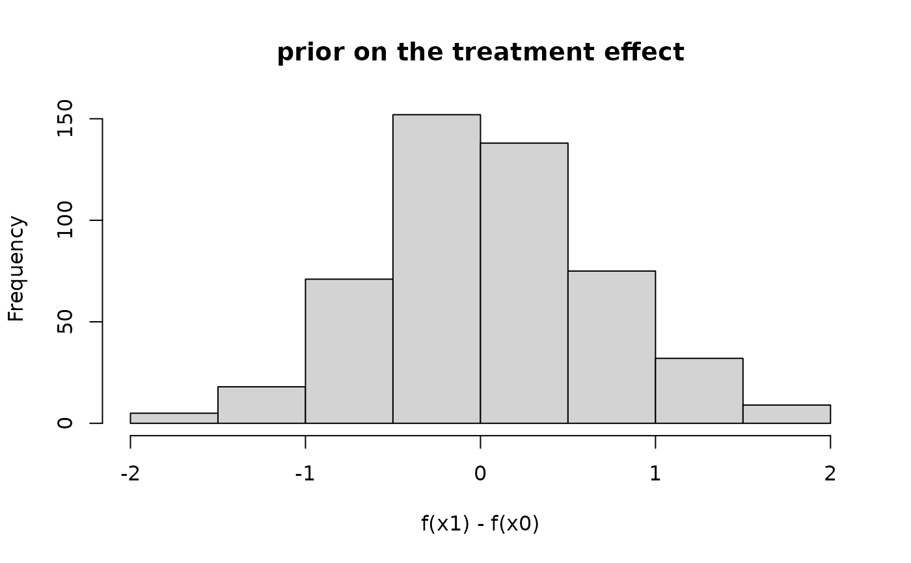

Draw From The BART Prior
samplePriorPredictive.RdDraws repeatedly from a dbartsSampler's prior - tree structure, end-node
parameters, and optionally response noise - and evaluates the resulting forest at x.test.
Useful for calibrating priors before ever fitting to data, e.g. inspecting the implied prior on a
treatment effect \(f(x_1) - f(x_0)\). The sampler passed in is never modified.
Usage
samplePriorPredictive(
sampler, x.test = NULL, n.samples = 200L,
type = c("ev", "ppd"), offset.test = NULL,
n.threads = sampler$control@n.threads
)Arguments
- sampler
A
dbartsSampler. Left unmodified: the function operates on a freshly constructed private sampler, built from this sampler's control, model, and data, with its own engine state.- x.test
A matrix of predictors at which to evaluate the drawn forests, in the form accepted by
predict.NULL(the default) evaluates at the sampler's own training predictors.- n.samples
A positive integer giving the number of independent prior draws to return.
- type
"ev"draws \(E[y \mid x]\) under the prior: the forest sum on the response scale for a gaussian sampler, or the link-transformed probability for a probit/logistic one - matching whatextractandpredictcall"ev"."ppd"adds the observation model on top: gaussian noise with sigma freshly drawn from its own prior for each sample, or a bernoulli draw from the"ev"probabilities for a binary sampler; on an aft (survival) sampler the draw is on the log-time scale (the model fits \(\log T\)). Unlikeextract's posterior"ppd", prior predictive draws are weight-blind: they use unit weights rather than a weighted precision (\(\sigma / \sqrt{w}\) for gaussian) or a \(\mathrm{Binomial}(w, p)\) success count (weighted logistic); supply any weighted precision downstream.- offset.test
A numeric offset added to the forest sum, as in
predict; recycled to the number of rows ofx.testif of length 1, orNULL(the default) for none.- n.threads
Forwarded to the underlying
predictcalls.
Details
Each of the n.samples draws independently redraws every tree's structure
(sampleTreesFromPrior) and end-node parameters (sampleNodeParametersFromPrior) from
scratch, then evaluates the resulting forest at x.test - there is no MCMC dependence between
rows of the result, unlike a posterior sample from run.
For type = "ppd" on a gaussian sampler, sigma is drawn once per sample from the model's
residual-variance prior: a scaled-inverse-chi-squared calibrated so that
\(P(\sigma < \code{sigest}) = \code{quantile}\) when the prior is
chisq (see dbartsPriors), or the sampler's fixed value when the prior is
fixed.
If sampler has more than one chain, prior draws are chain-free: each of the n.samples
draws only keeps the first chain's stream (the other chains still advance their own independent
engine RNGs, but their draws are discarded), since there is no mixing or convergence concept for
draws that are already independent by construction.
Seeding follows from the private sampler being constructed fresh on every call. When the
control's rngSeed is NA (the default), the engine RNG
is seeded from R's random number stream at construction, so successive calls return independent
draws, and a set.seed beforehand makes the whole draw - forests and observation
layer alike - reproducible. When the control fixes rngSeed, the engine stream is pinned:
every call replays the identical forest sequence, with only the R-side "ppd" observation
layer still governed by set.seed.
To compare the prior at two or more covariate settings with paired forests - as for a treatment
effect - stack the settings as rows of a single x.test and difference the corresponding
columns of the result; see ‘Examples’. Two separate calls draw independent sets of forests
(unless rngSeed is fixed, as above) and so cannot be differenced meaningfully.
Value
A matrix with n.samples rows and one column per row of x.test (or of the training
predictors, when x.test is NULL) - the combined-draws convention extract
uses for a single chain, with no chain dimension.
See also
dbartsSampler for sampleTreesFromPrior, sampleNodeParametersFromPrior,
and predict, the building blocks this function composes. dbarts for
creating a sampler. extract for the same "ev"/"ppd" vocabulary applied to
posterior draws.
Examples
n <- 100
x <- matrix(runif(n * 2), n, 2)
y <- x[, 1] - x[, 2] + rnorm(n, 0, 0.2)
sampler <- dbarts(y ~ x, control = dbartsControl(n.chains = 1L, n.threads = 1L))
## prior-predictive draws of a treatment effect f(x1) - f(x0), holding the
## other covariate fixed at its midpoint: calibrates the prior before ever
## touching y. Stacking both settings into one x.test pairs the forests, so
## the two columns of the result come from the same drawn function.
xContrast <- rbind(c(0, 0.5), c(1, 0.5))
colnames(xContrast) <- colnames(sampler$data@x)
f <- samplePriorPredictive(sampler, x.test = xContrast, n.samples = 500L)
effect <- f[, 2] - f[, 1]
hist(effect, main = "prior on the treatment effect", xlab = "f(x1) - f(x0)")
